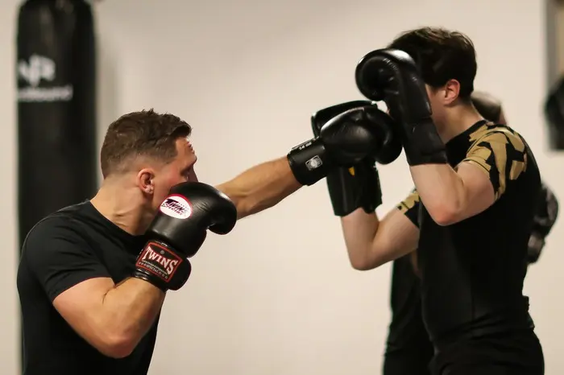

Vanaf 16 jaarKickboksen 16+
Ma 19.00Ma 20.10Wo 19.00Wo 20.10
De basis tot in de puntjes: stand, verdediging, stoten en trappen, en dan combinaties. Beginners en gevorderden trainen in aparte uren, zodat je nooit te makkelijk of te moeilijk zit. Via het shirtsysteem werk je stap voor stap naar een hoger niveau.
"Het moeilijkste aan kickboksen is het er makkelijk uit laten zien."Shirtsysteem van toepassing: je werkt naar een hoger niveau.
Plan een proefles